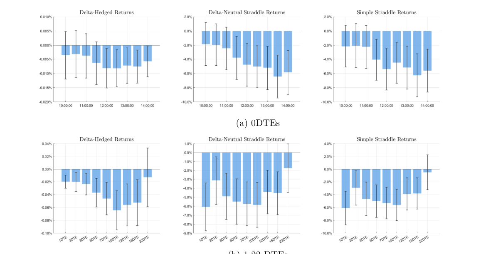

Variance risk premium ของ 0DTE
บทนี้แยกความเสี่ยงจากการเหวี่ยงแรงออกเป็นฝั่งขึ้นและฝั่งลง
variance risk คืออะไร
คือความเสี่ยงที่ตลาดเหวี่ยงแรง ไม่ว่าจะขึ้นหรือลง คนที่ long volatility ได้ประโยชน์เมื่อเหวี่ยงแรง ส่วนคนที่ short volatility รับความเสี่ยงนั้น
หลักฐานจาก strategy returns
delta-hedged calls และ straddles ของ 0DTE ให้ average returns ติดลบ แปลว่าคนยอมจ่าย premium เพื่อซื้อ protection จาก variance risk

จุดแปลก
ใน 0DTE upside variance risk premium ใหญ่กว่าด้าน downside ซึ่งกลับด้านจากภาพ option อายุยาวที่ downside มักครอง
ถามตัวเอง
- long straddle ได้ประโยชน์จากอะไร
- ทำไม return ติดลบของ long volatility จึงแปลว่ามี variance risk premium